Auf Google Cloud Platform mit Ubuntu Desktop via Chrome Remote Desktop OBS und Zoom fernsteuern
Instanz erstellen auf https://console.cloud.google.com/
- Name, Region und Zone auswählen
- E2 4 vCPU, 16GB Arbeitsspeicher - 0,17$ pro Stunde
- Betriebssystem Ubuntu 20.04 LTS
Ubuntu Desktop auf Google Cloud Plattform installieren
https://ubuntu.com/blog/launch-ubuntu-desktop-on-google-cloud https://cloud.google.com/architecture/chrome-desktop-remote-on-compute-engine#gnome https://bytexd.com/install-chrome-remote-desktop-headless/ https://cloud.google.com/architecture/chrome-desktop-remote-on-compute-engine#automating_the_installation_process
Via SSH/Terminal Update, Tasksel und Google Remote Desktop installieren:
sudo apt update
sudo apt install --assume-yes wget tasksel
wget https://dl.google.com/linux/direct/chrome-remote-desktop_current_amd64.deb
sudo apt-get install --assume-yes ./chrome-remote-desktop_current_amd64.deb
Cinnamon Desktop installieren
sudo DEBIAN_FRONTEND=noninteractive \
apt install --assume-yes cinnamon-core desktop-base dbus-x11
sudo bash -c 'echo "exec /etc/X11/Xsession /usr/bin/cinnamon-session-cinnamon2d" > /etc/chrome-remote-desktop-session'
Zusätzliche Einstellungen:
sudo systemctl disable lightdm.service
Deutsche Tastatur in der Ubuntu-Konsole festlegen:
sudo dpkg-reconfigure keyboard-configuration
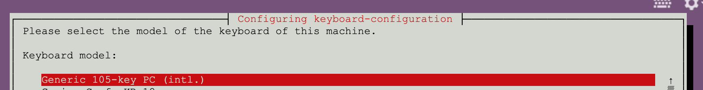

Optional: Google Chrome Browser installieren
wget https://dl.google.com/linux/direct/google-chrome-stable_current_amd64.deb
sudo apt install --assume-yes ./google-chrome-stable_current_amd64.deb
Chrome Remote Desktop konfiguieren und starten
https://cloud.google.com/architecture/chrome-desktop-remote-on-compute-engine#configuring_and_starting_the_chrome_remote_desktop_service) Mit Google-Konto, das zur Remote-Stuerung benutzt werden soll, https://remotedesktop.google.com/headless aufrufen und den SSH-Befehl in der Konsole ausführen. 6-Stellige PIN festlegen.
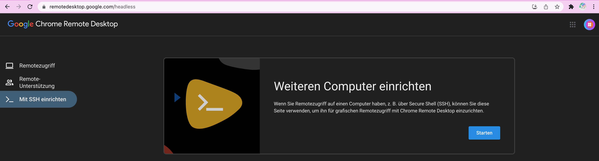
Prüfen ob der Dienst ausgeführt wird:sudo systemctl status chrome-remote-desktop@$USER
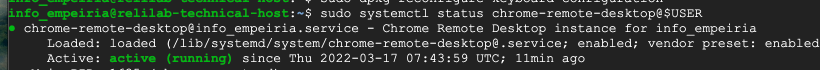
Instanzzeitplan festlegen
https://rominirani.com/hands-on-guide-to-scheduling-vm-instances-to-start-and-stop-a079a50e16c6
OBS Installation
https://obsproject.com/wiki/install-instructions#ubuntumint-installation
sudo apt install ffmpeg
sudo apt install v4l2loopback-dkms
sudo add-apt-repository ppa:obsproject/obs-studio
sudo apt update
sudo apt install obs-studio
Problem:
Test mit v4l2-ctl --list-devices bringt Fehlermeldung:
Cannot open device /dev/video0, exiting.
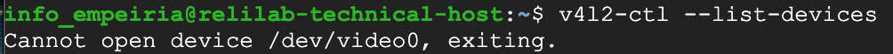
Lösung für virtuelle Kamera auf virtueller Maschine:
sudo apt -y install v4l2loopback-dkms v4l2loopback-utils linux-modules-extra-$(uname -r)
sudo modprobe v4l2loopback
Jetzt:
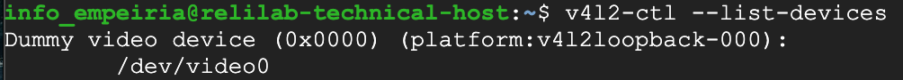
Problem: Trotzdem nach jedem Reboot wird die virtuelle Kamera nicht geladen:
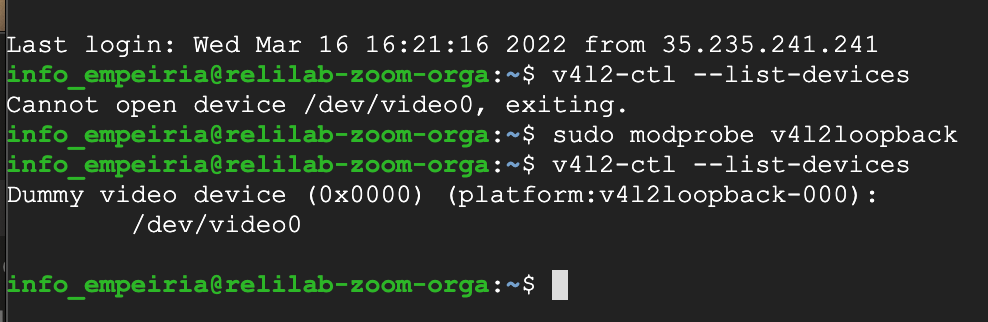
Lösung v4l2loopback bei Start laden:
https://askubuntu.com/questions/1245212/how-do-i-automatically-run-modprobe-v4l2loopback-on-boot
sudo nano /etc/modules
hinzufügen: v4l2loopback
Zoom Installation
https://support.zoom.us/hc/de/articles/204206269-IZoom-unter-Linux-installieren-oder-aktualisieren
sudo apt install gdebi
sudo apt update
sudo apt upgrade
sudo snap install zoom-client
Inbetriebnahme des Remote Desktop
Verbindung zur VM-Instanz herstellen
Via https://remotedesktop.google.com/access auf das Remote Gerät zugreifen.:
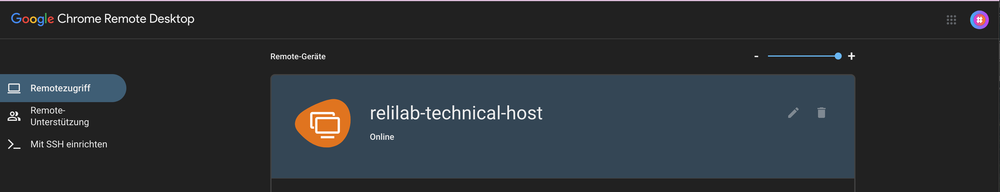
Sechsstelligen PIN eingeben: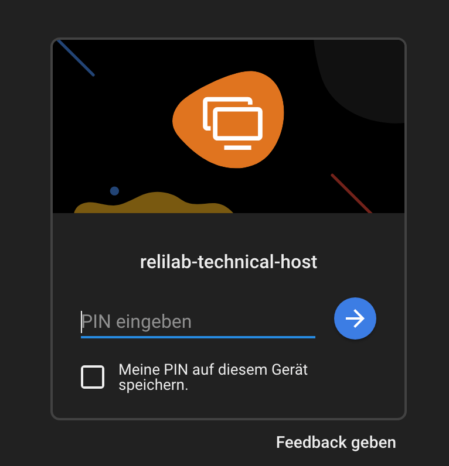
Keyboard / Tastatur auf deutsch umstellen:
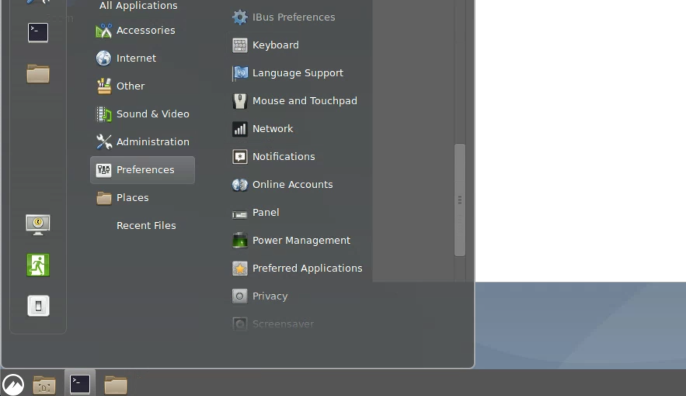
Apps auf dem Desktop verknüpfen:
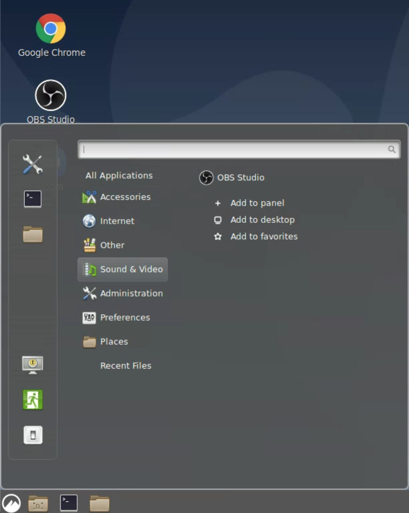
OBS einrichten
OBS mit virtueller Kamera automatisch starten:
Rechtsklick auf die Verknüpfung und dann beim Startbefehl --startvirtualcam ergänzen.
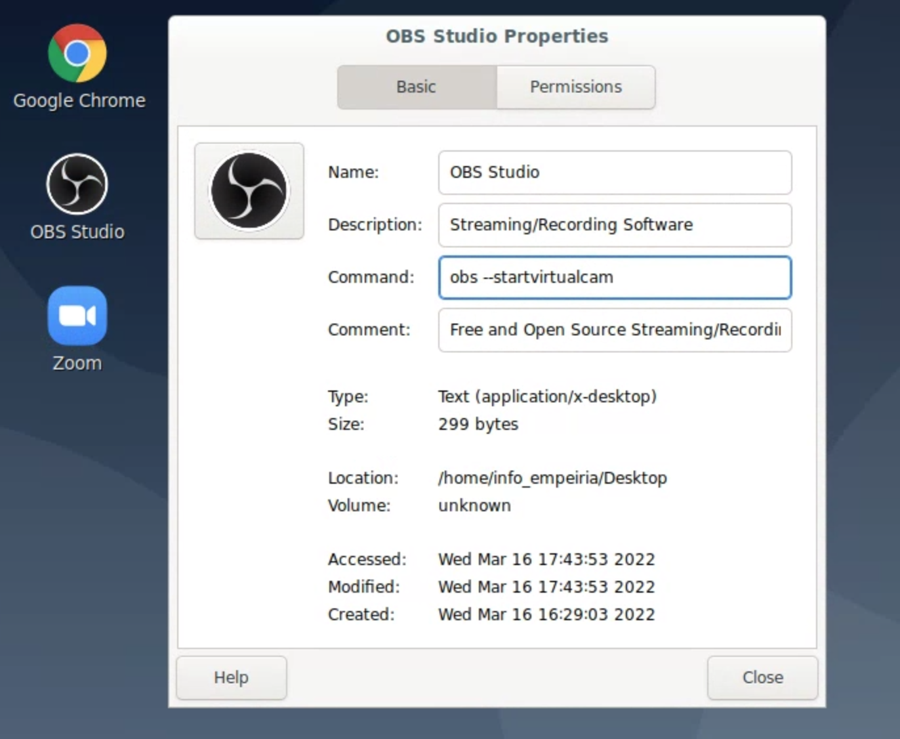
Beim Systemstart mit virtueller Kamera starten:
startup Applications wählen
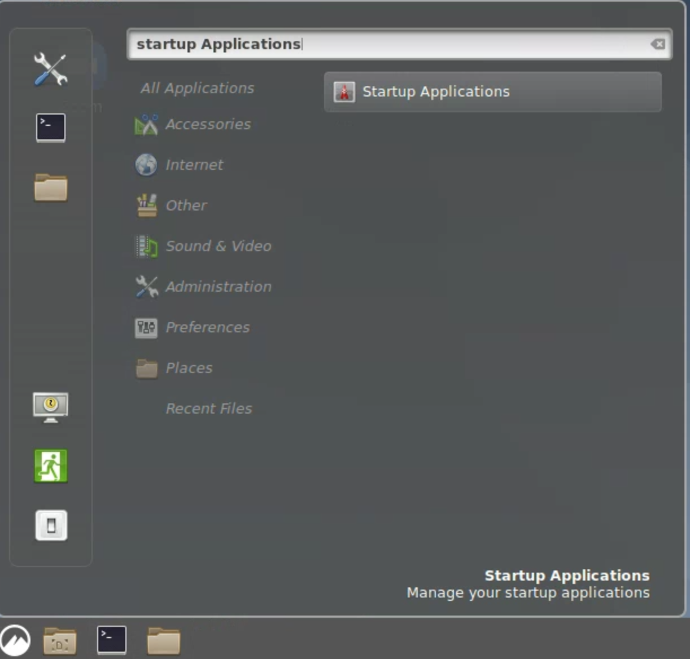
ebenfalls--startvirtualcam ergänzen
Beim ersten Start von OBS
“I will only be using the virtual camera” wählen:
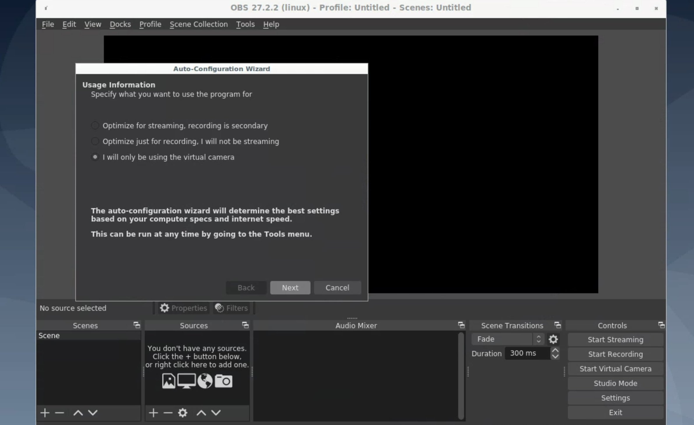
In den Einstellungen die Sprache auf Deutsch umstellen: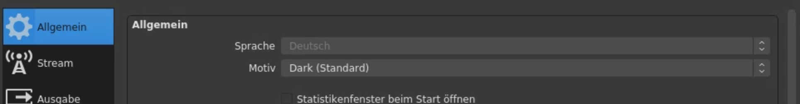
Videoauflösung auf 1920x1080 umstellen: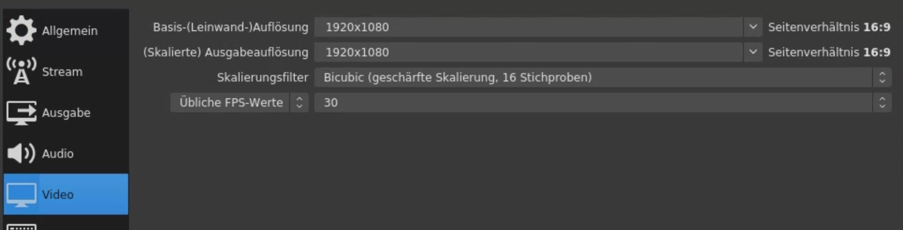
Szenensammlung importieren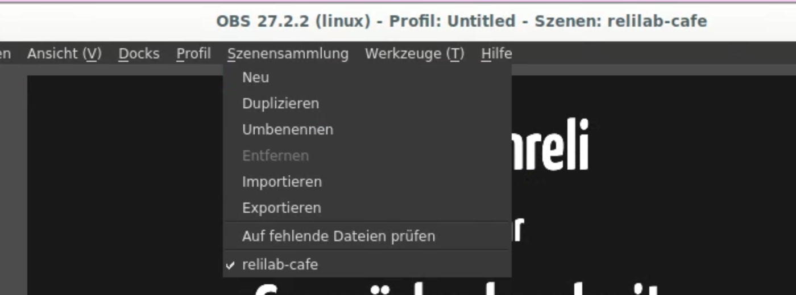
(Vorkonfigurierte Szenen für das relilab-Café immer aktuell auf Github) - relilab-cafe-obs-json.jsonGoogle Chrome einrichten
Beim ersten Systemstart Password for new Keyring erstellen:
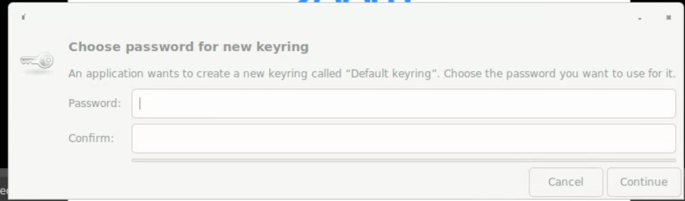
Chrome zum Standardbrowser machen
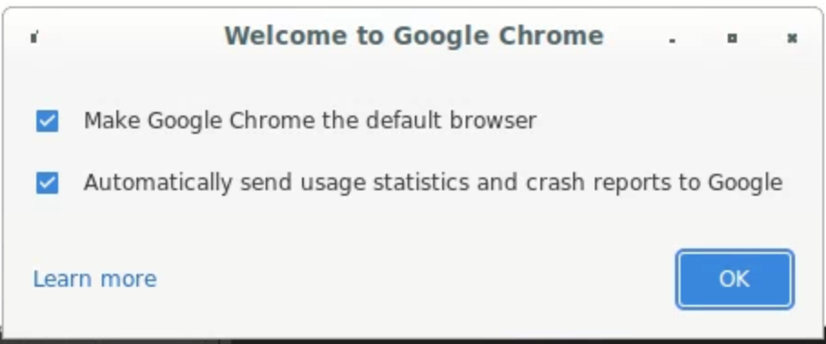
Google Chrome anmelden und Sync inkl. Lesezeichen aktivieren
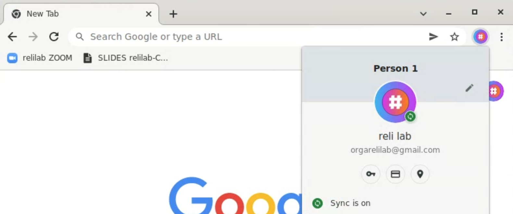
Zoom einrichten
Zoom-Account anmelden
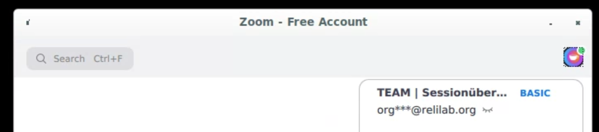
Sprache ändern in Zoom
Zoom starten und dann das Zoom-Symbol rechts in der unteren Leiste mit Rechtsklick der Maus das Menü zur Sprachänderung aufrufen:
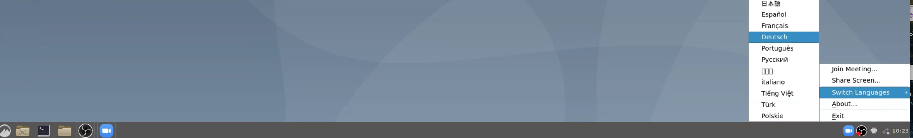
Problemlösungen
Problem - keine Emojis in den Slides
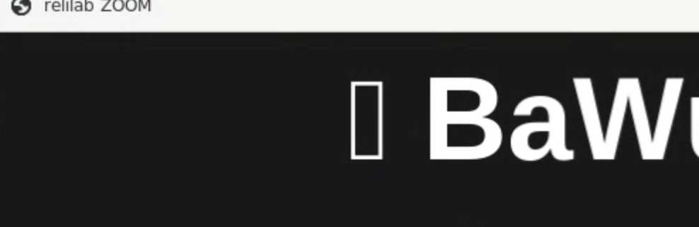
Lösung: https://medium.com/@harshmaur/emojis-missing-from-chrome-in-ubuntu-9c25fe10867c
sudo apt-get remove fonts-noto-color-emoji
sudo apt-get install fonts-noto-color-emoji
Problem - kein Font Yanone Kaffeesatz in den Slides
Lösung: https://zoomadmin.com/HowToInstall/UbuntuPackage/fonts-yanone-kaffeesatz
sudo apt-get update -y
sudo apt-get install -y fonts-yanone-kaffeesatz
Mögliches Problem
GUI (Ubuntu Desktop) has its own security layer which blocks the root account from login. So, even we have a properly enabled root account with password, it does not work in GUI interface.
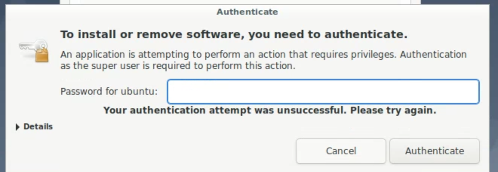
https://askubuntu.com/questions/1192471/login-as-root-on-ubuntu-desktop
Anstatt auf Cloud-Plattform mit Linux auf lokalem Windows-PC
Autostart OBS inkl virtueller Kamera & Zoom
Vorbereiten OBS inkl Virtueller Kamera
Hinzufügen von --startvirtualcam zur OBS-Verknüpfung:
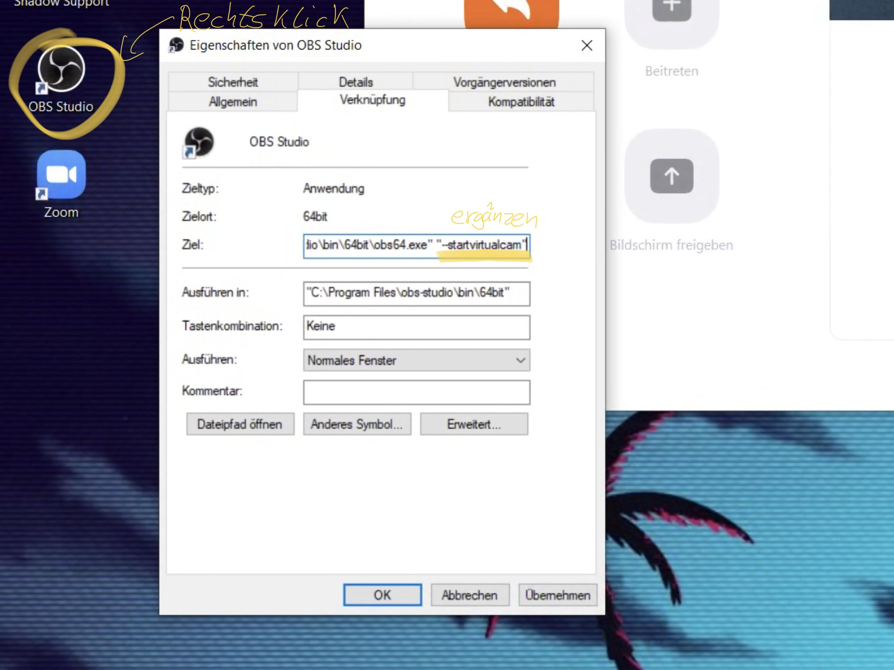
open the start menu/tile thing and type in:
Run and hit enter. Then type in shell:startup
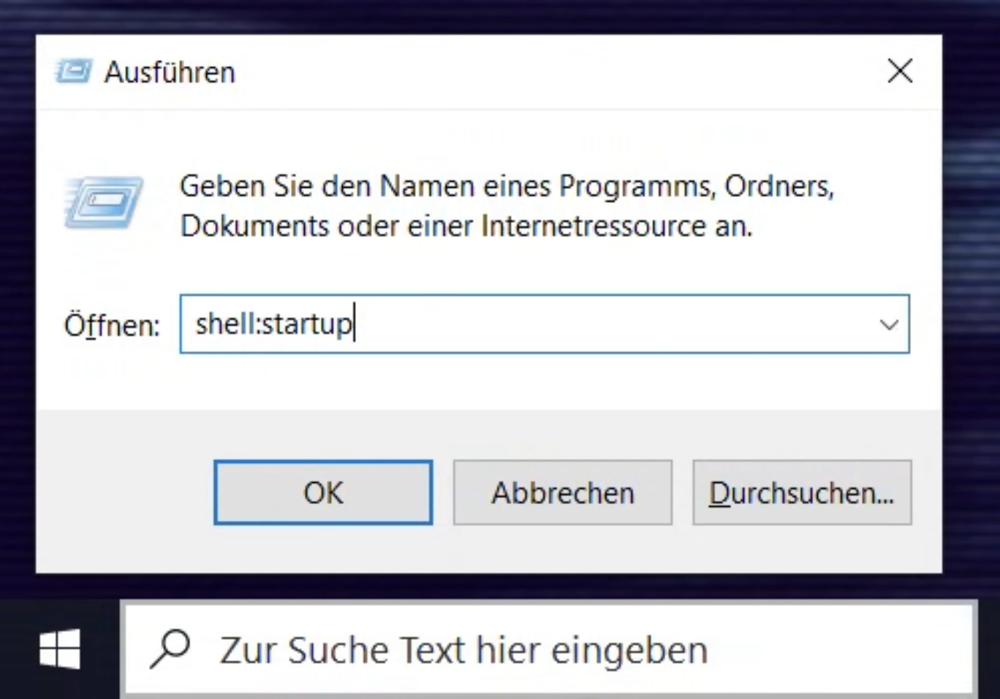
Dann die Verknüpfungen in den Autostartordner kopieren: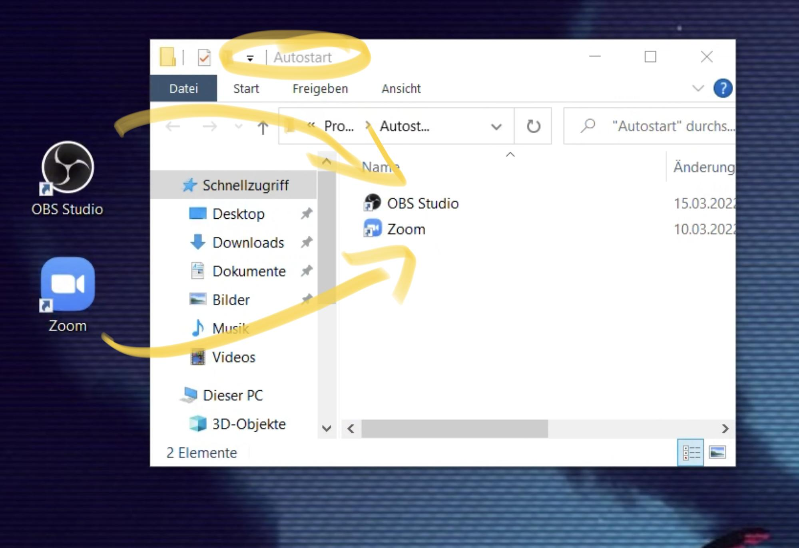
Weitere Schritte wie oben